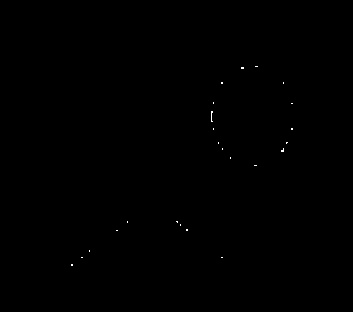
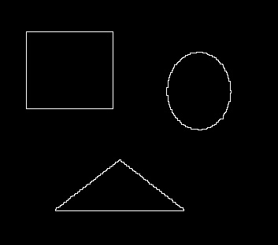

Morphology (Noise removal)
GitHubHere A is the image with noise and B is the structuring element (3X3 matix filled with 1’s). We will have to implement erosion, dilation, open and closing for achieving this task.
Algorithm one :
(A o B) ● B:
Algorithm two :
(A ● B) o B
Note:
I compared the two image by subtracting the first algo from the second, and second from the first. In case they are same both the result will be black (Empty image). But following is the result. Hence they are not the same. Following is the result of second algorithm minus the first algorithm. From this we can tell that the second algo produces a slightly bigger image than the first. First minus second was a completely black image, meaning either it is confined inside second algo or exactly same, but with the below result we can conclude that they are not same.

Boundary Extraction
GitHubFollowing is the Algorithm used to implement vertical and diagonal line detection:
Boundary extraction was done by subtracting the noiseless image and its eroded image Let the noiseless image be A.A - (A ! B)
A extracted from the first algorithm
A extracted from the second algorithm